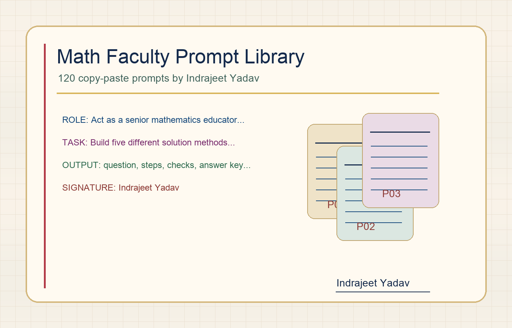

Indrajeet Yadav Math Faculty Prompt Library
120 copy-paste prompts for mathematics teachers: handwritten solution pages, multi-method explanations, assignments, DPPs, question papers, rubrics, and revision tools. Built for non-technical faculty who want better ChatGPT results without learning APIs, tools, or complicated prompt engineering.

How To Use
Every prompt is already written. Teachers only replace the square brackets, paste into ChatGPT, and review the result before using it with students.
Choose one card matching your task: solution, assignment, DPP, paper, rubric, or revision.
Fill [GRADE], [TOPIC], [COUNT], [TIME], and paste or upload the question if needed.
Send the prompt in ChatGPT. For image pages, generate one page at a time if needed.
Ask for a quick self-check, confirm the answer key, then print, share, or adapt.
Downloads
The same library is available as a webpage, Markdown pack, PDF, DOCX, and structured JSON.
Markdown Prompt Pack
Best for direct copying, editing, and GitHub reading.
PDF Guide
Printable teacher handout with all prompts and usage steps.
Word DOCX
Editable document for faculty training or school customization.
Prompt JSON
Structured data for future apps, search, or expansion.
Student Copy Grader
Browser-based rubric grading app with local records and reports.
Master Input Block
Faculty can fill this once, then reuse it with any prompt. It prevents vague outputs and makes ChatGPT behave like a focused teaching assistant.
Grade/exam level: [GRADE] Topic/chapter: [TOPIC] Source material/question: [PASTE_TEXT_OR_UPLOAD_IMAGE] Required count/length: [COUNT] Time available: [TIME] Student level: [WEAK / AVERAGE / ADVANCED / MIXED] Language style: [LANGUAGE]
Project Credit
Each prompt includes a footer credit so teachers remember the project source while keeping their classroom material usable.
Indrajeet Yadav
Prompt Library
Search by topic, category, use case, or style. Open a card, copy the prompt, then replace the bracketed fields.
Style Vault
These style packs are included inside the prompts so faculty can request premium handwritten pages, notes, worksheets, and visual explanations without writing style instructions from scratch.